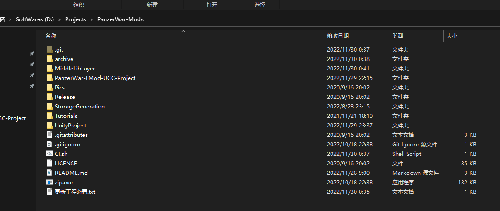
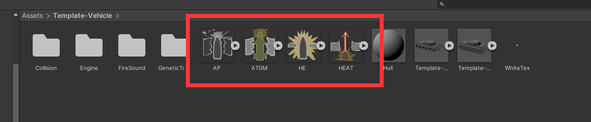
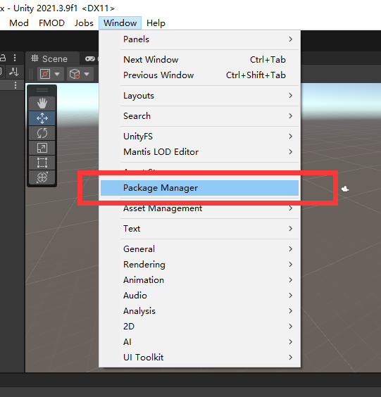
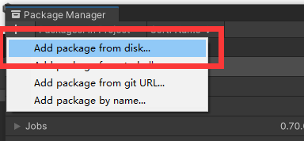
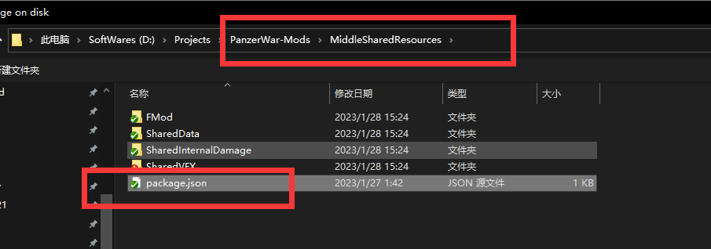
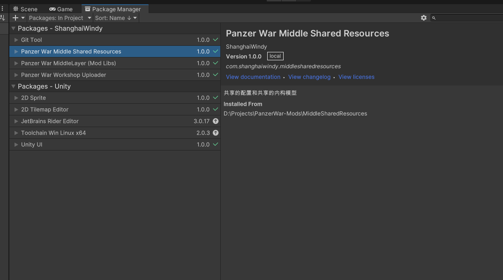
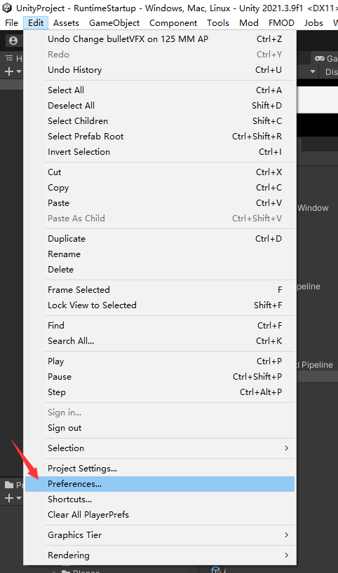
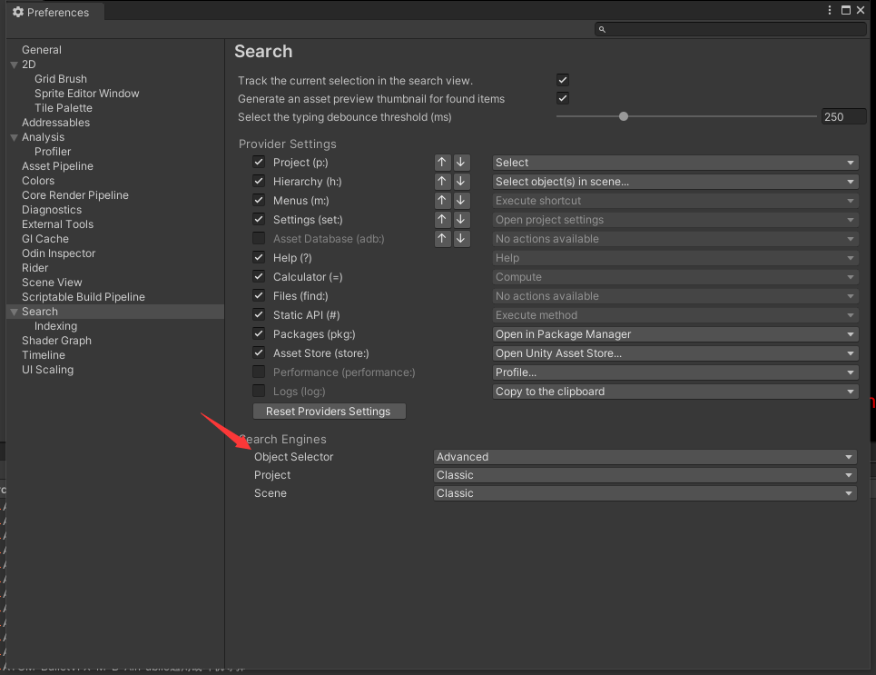
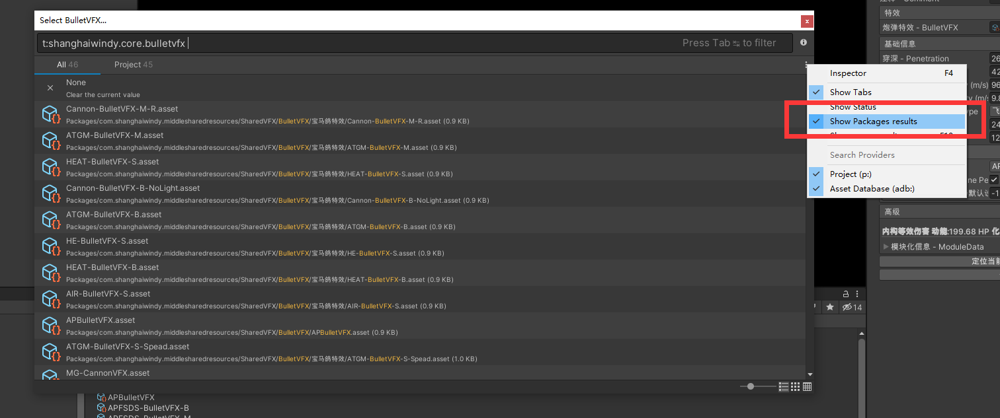

0.3.3 Shared Resources 共享资源文件夹
Introduction 概述
To simplify resource updates, VFX, FMOD configuration, and hitbox presets have been moved to shared resources. Old projects need to delete them and add the new package to the project.
为了简化资源更新流程，特效、FMOD 配置以及伤害模型预设已移至共享资源。旧工程需从项目中移除这些资源，并添加新的包。
1. Download Latest Project 下载最新工程
Download the latest project; you can refer to this document.
下载最新的工程。

2. Open Your Old Project 打开你的旧工程
Backup your project, then delete the following folders.
备份你的工程，然后删除以下文件夹。
UnityProject\Assets\Res\VFX
UnityProject\Assets\Res\Vehicles\Data\FMod
UnityProject\Assets\Res\Vehicles\Ground\Data\VFX
UnityProject\Assets\Res\InternalDamage\Preset
And delete these four files.
以及删除这四个文件。

3. Add new package 添加新包
Add the following package from local. It is located in the directory where you downloaded the project in Step 1.
添加以下本地包。它位于你在步骤 1 中下载的工程目录中。



When the package is shown, it means the upgrade is finished.
显示如下文字，即表示升级完成。

4. Switch picker 切换文件选择器
The classic picker does not support picking files from packages. You need to toggle to the new picker.
默认的文件选择器不支持从包中选取文件。你需要切换到新的 picker。



When using the picker, toggle on Show Package results.
在使用 Picker 时，勾选 Show Package results。